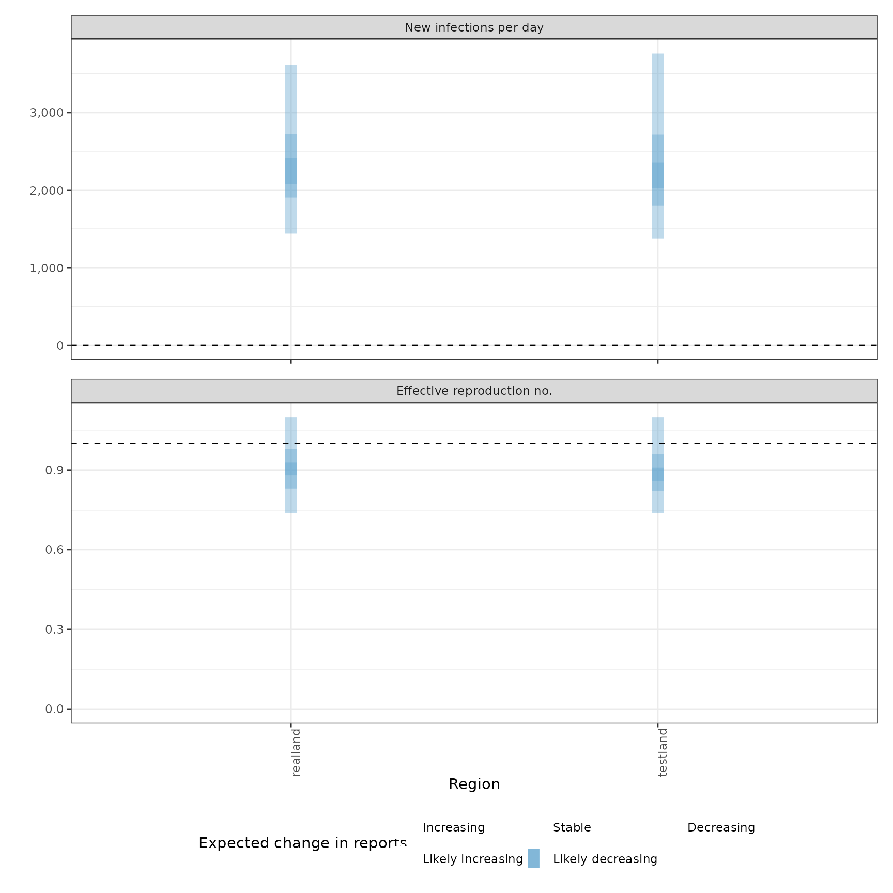
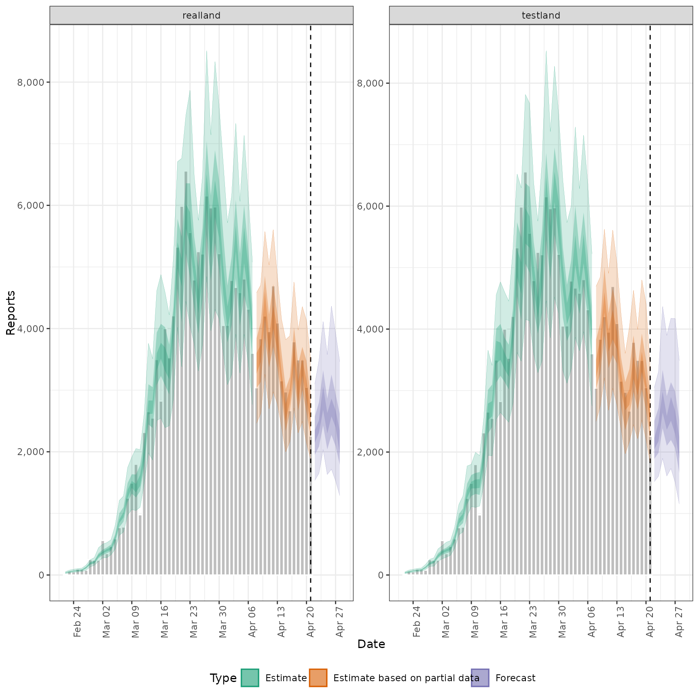
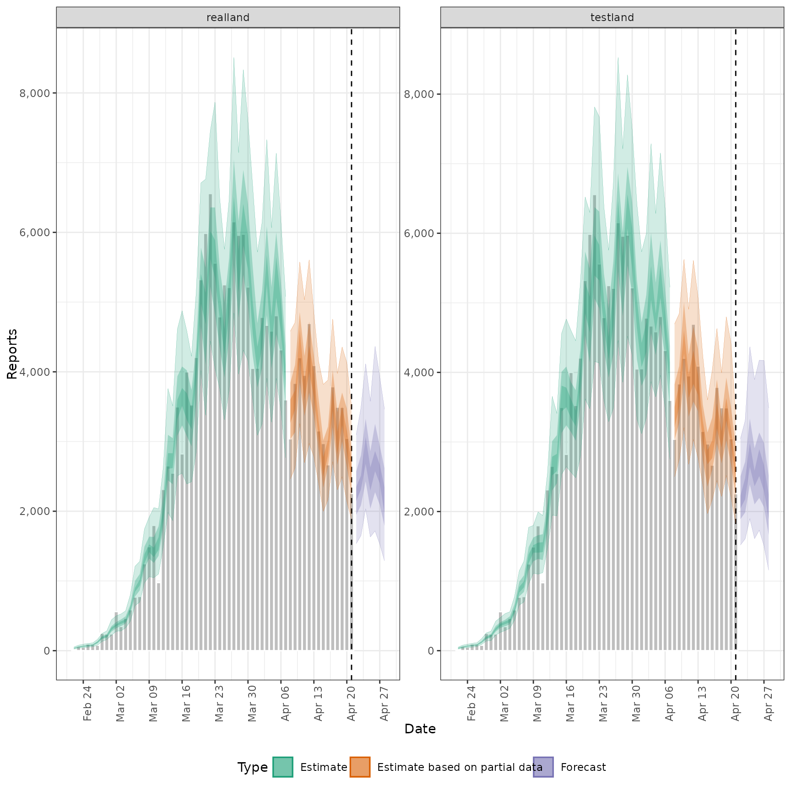
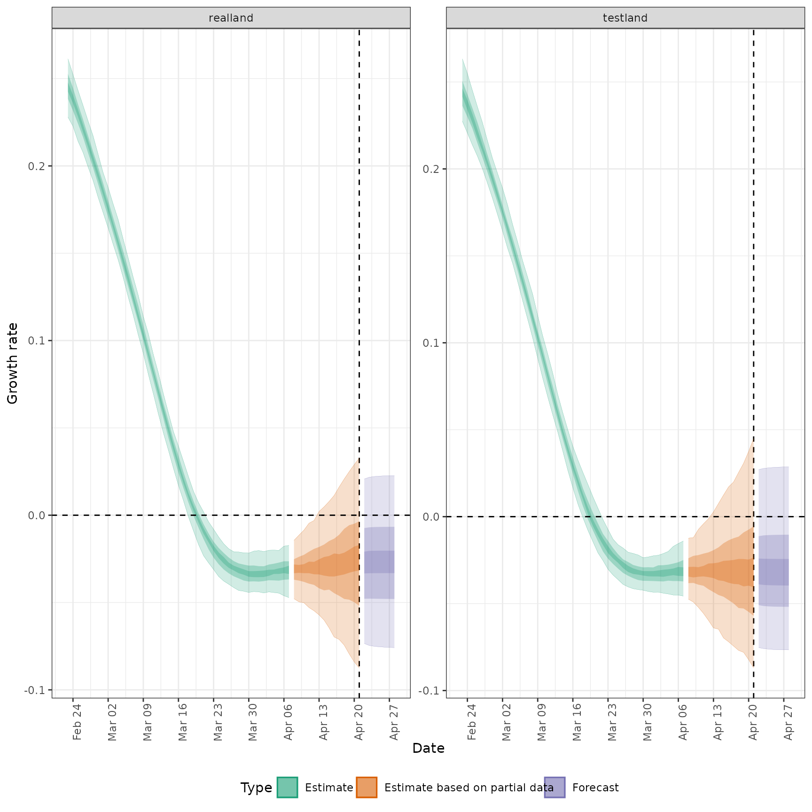
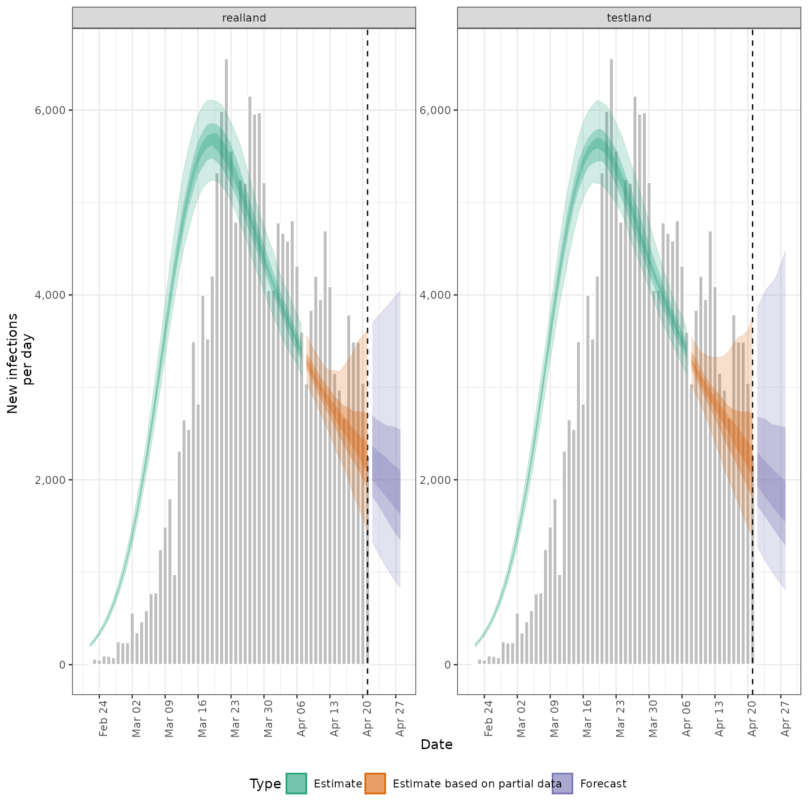
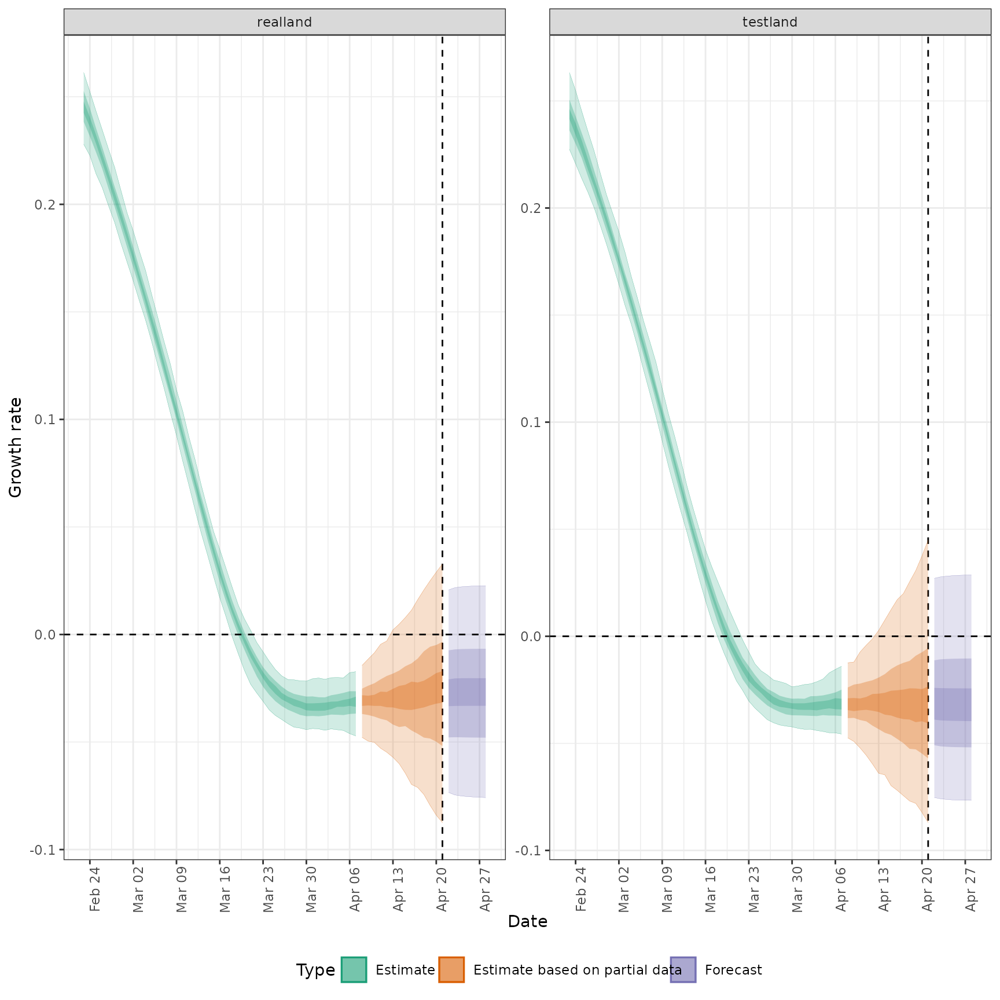
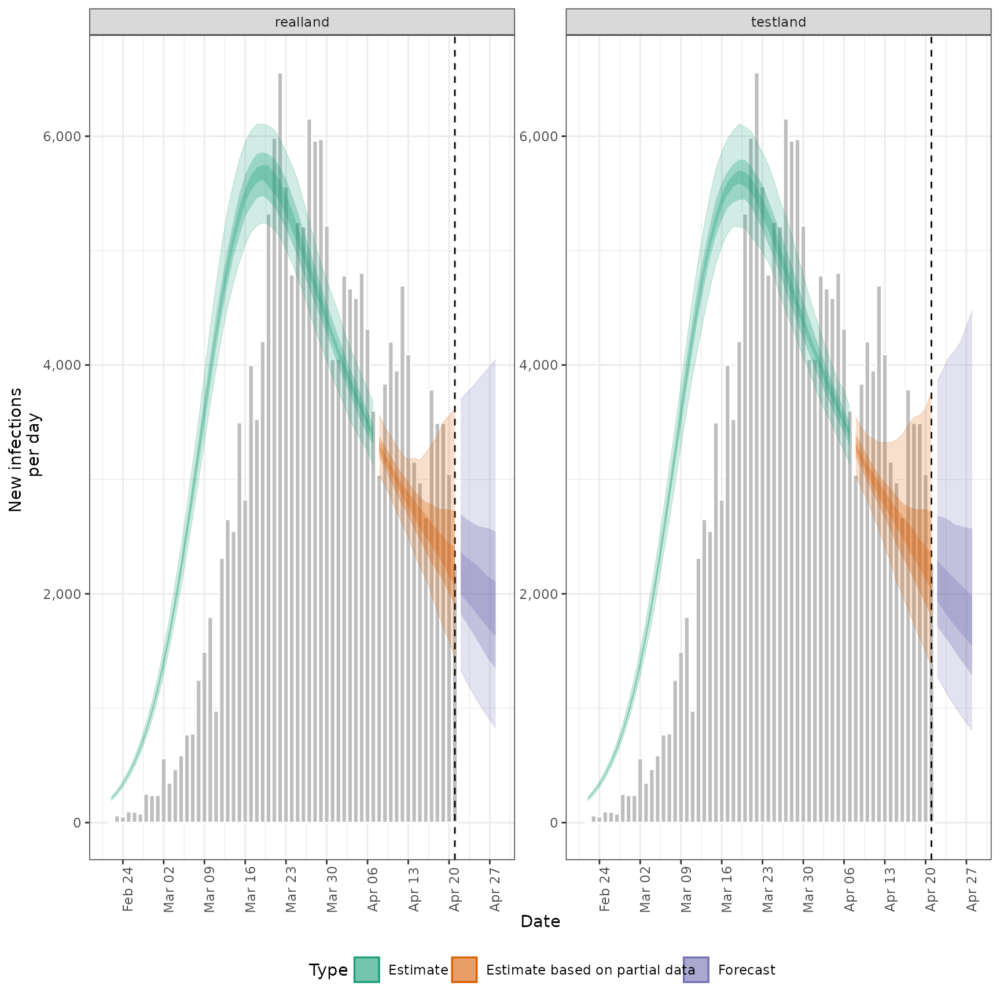
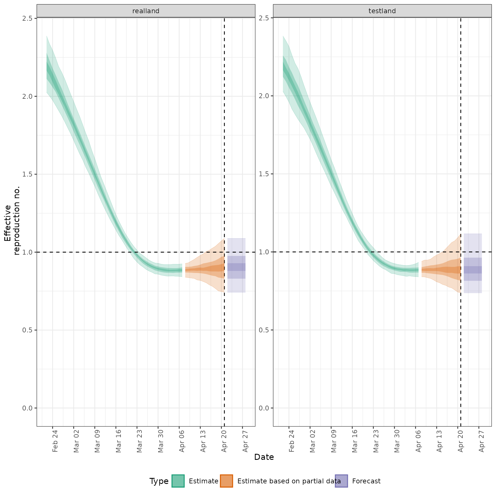
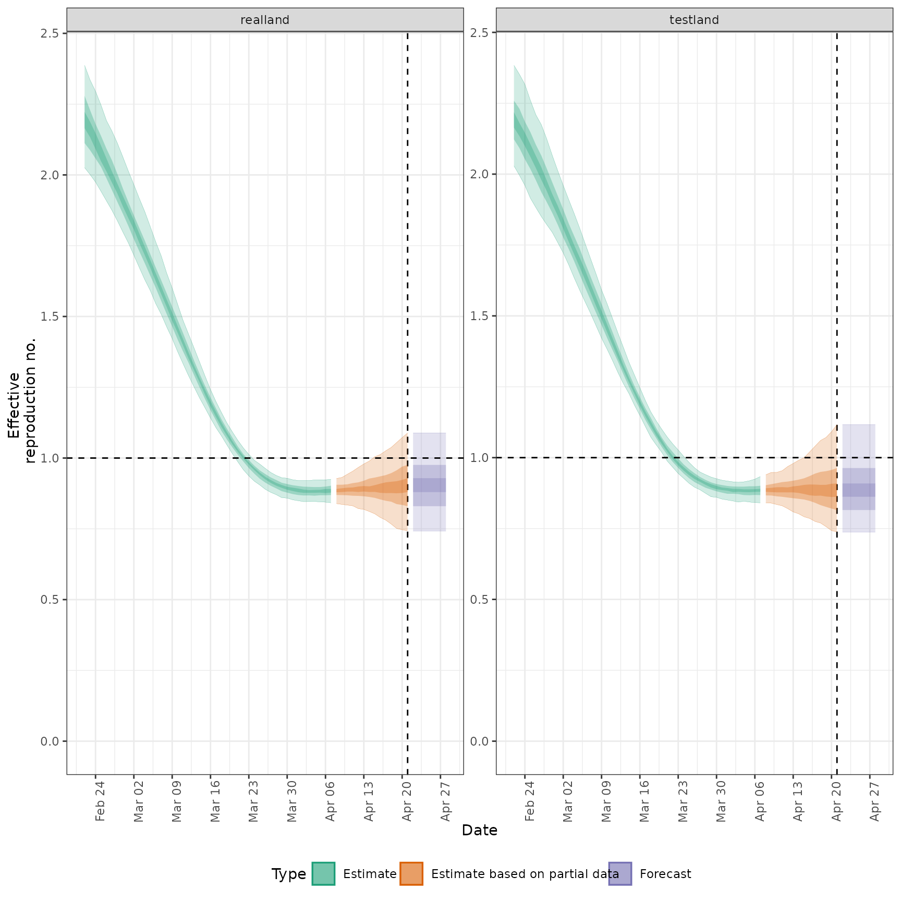

![[Maturing]](figures/lifecycle-maturing.svg) Used to produce summary output either internally in
Used to produce summary output either internally in regional_epinow or
externally.
Usage
regional_summary(
regional_output = NULL,
data,
results_dir = NULL,
summary_dir = NULL,
target_date = NULL,
region_scale = "Region",
all_regions = TRUE,
return_output = is.null(summary_dir),
plot = TRUE,
max_plot = 10,
...
)Arguments
- regional_output
A list of output as produced by
regional_epinow()and stored in theregionallist.- data
A
<data.frame>of disease reports (confirm) by date (date), and region (region).- results_dir
An optional character string indicating the location of the results directory to extract results from.
- summary_dir
A character string giving the directory in which to store summary of results.
- target_date
A character string giving the target date for which to extract results (in the format "yyyy-mm-dd"). Defaults to latest available estimates.
- region_scale
A character string indicating the name to give the regions being summarised.
- all_regions
Logical, defaults to
TRUE. Should summary plots for all regions be returned rather than just regions of interest.- return_output
Logical, defaults to FALSE. Should output be returned, this automatically updates to TRUE if no directory for saving is specified.
- plot
Logical, defaults to
TRUE. Should regional summary plots be produced.- max_plot
Numeric, defaults to 10. A multiplicative upper bound on the\ number of cases shown on the plot. Based on the maximum number of reported cases.
- ...
Additional arguments passed to
report_plots.
Examples
# get example output from regional_epinow model
regional_out <- readRDS(system.file(
package = "EpiNow2", "extdata", "example_regional_epinow.rds"
))
regional_summary(
regional_output = regional_out$regional,
data = regional_out$summary$reported_cases
)
#> INFO [2025-03-01 01:59:12] No summary directory specified so returning summary output
#> $latest_date
#> [1] "2020-04-21"
#>
#> $results
#> $results$estimates
#> $results$estimates$summarised
#> Indices: <variable>, <region>
#> region date variable strat type median
#> <char> <Date> <char> <char> <char> <num>
#> 1: testland 2020-02-22 R <NA> estimate 2.1904337
#> 2: testland 2020-02-23 R <NA> estimate 2.1593909
#> 3: testland 2020-02-24 R <NA> estimate 2.1237990
#> 4: testland 2020-02-25 R <NA> estimate 2.0881701
#> 5: testland 2020-02-26 R <NA> estimate 2.0433312
#> ---
#> 716: realland 2020-04-25 reported_cases <NA> forecast 2413.0000000
#> 717: realland 2020-04-26 reported_cases <NA> forecast 2761.5000000
#> 718: realland 2020-04-27 reported_cases <NA> forecast 2540.0000000
#> 719: realland 2020-04-28 reported_cases <NA> forecast 2165.0000000
#> 720: realland <NA> reporting_overdispersion <NA> <NA> 0.1681107
#> mean sd lower_90 lower_50 lower_20
#> <num> <num> <num> <num> <num>
#> 1: 2.1987465 0.11936446 2.0290154 2.122593 2.1644350
#> 2: 2.1636622 0.11317986 1.9960173 2.091948 2.1341706
#> 3: 2.1266840 0.10835245 1.9602776 2.052648 2.0986941
#> 4: 2.0879467 0.10432778 1.9152857 2.018051 2.0609819
#> 5: 2.0476364 0.10065252 1.8822327 1.978677 2.0216809
#> ---
#> 716: 2507.1200000 636.15840257 1631.6000000 2037.750000 2296.4000000
#> 717: 2812.4750000 770.72089818 1717.8000000 2274.000000 2574.0000000
#> 718: 2577.9150000 716.93041775 1528.6500000 2091.750000 2399.0000000
#> 719: 2241.0500000 679.88398175 1289.3000000 1788.500000 1966.6000000
#> 720: 0.1683587 0.01884363 0.1406744 0.153863 0.1615204
#> upper_20 upper_50 upper_90
#> <num> <num> <num>
#> 1: 2.2186206 2.2592170 2.3837229
#> 2: 2.1805488 2.2306900 2.3521448
#> 3: 2.1456947 2.1850941 2.3165162
#> 4: 2.1056273 2.1482164 2.2603597
#> 5: 2.0644054 2.1037540 2.2093402
#> ---
#> 716: 2628.6000000 2859.5000000 3577.0000000
#> 717: 2863.8000000 3253.5000000 4364.9000000
#> 718: 2670.2000000 2937.0000000 3925.7000000
#> 719: 2343.6000000 2616.7500000 3462.6500000
#> 720: 0.1733354 0.1793302 0.2009034
#>
#>
#>
#> $summarised_results
#> $summarised_results$table
#> Region New infections per day Expected change in reports
#> <char> <char> <fctr>
#> 1: realland 2252 (1444 -- 3615) Likely decreasing
#> 2: testland 2211 (1376 -- 3762) Likely decreasing
#> Effective reproduction no. Rate of growth
#> <char> <char>
#> 1: 0.9 (0.74 -- 1.1) -0.027 (-0.087 -- 0.033)
#> 2: 0.89 (0.74 -- 1.1) -0.033 (-0.087 -- 0.045)
#> Doubling/halving time (days)
#> <char>
#> 1: -26 (21 -- -7.9)
#> 2: -21 (15 -- -8)
#>
#> $summarised_results$data
#> region estimate median mean sd lower_90 lower_50
#> <fctr> <char> <num> <num> <num> <num> <num>
#> 1: realland 2252 (1444 -- 3615) 2252.00 2357.00 684.00 1444.00 1903.00
#> 2: testland 2211 (1376 -- 3762) 2211.00 2330.00 751.00 1376.00 1802.00
#> 3: realland 0.9 (0.74 -- 1.1) 0.90 0.91 0.11 0.74 0.83
#> 4: testland 0.89 (0.74 -- 1.1) 0.89 0.90 0.12 0.74 0.82
#> lower_20 upper_20 upper_50 upper_90 metric
#> <num> <num> <num> <num> <fctr>
#> 1: 2077.00 2416.00 2722.00 3615.0 New infections per day
#> 2: 2031.00 2356.00 2716.00 3762.0 New infections per day
#> 3: 0.88 0.93 0.98 1.1 Effective reproduction no.
#> 4: 0.86 0.91 0.96 1.1 Effective reproduction no.
#> Expected change in reports prob_control
#> <fctr> <list>
#> 1: Likely decreasing 0.82
#> 2: Likely decreasing 0.82
#> 3: Likely decreasing 0.82
#> 4: Likely decreasing 0.82
#>
#> $summarised_results$regions_by_inc
#> [1] "realland" "testland"
#>
#>
#> $summary_plot

#>
#> $summarised_measures
#> $summarised_measures$rt
#> region date strat type median mean sd
#> <char> <Date> <char> <char> <num> <num> <num>
#> 1: realland 2020-02-22 <NA> estimate 2.1901760 2.2009718 0.11605351
#> 2: realland 2020-02-23 <NA> estimate 2.1513337 2.1633803 0.10599322
#> 3: realland 2020-02-24 <NA> estimate 2.1196882 2.1241954 0.09799918
#> 4: realland 2020-02-25 <NA> estimate 2.0783972 2.0836645 0.09189139
#> 5: realland 2020-02-26 <NA> estimate 2.0346155 2.0420250 0.08733183
#> ---
#> 130: testland 2020-04-24 <NA> forecast 0.8853935 0.8982565 0.11766176
#> 131: testland 2020-04-25 <NA> forecast 0.8853935 0.8982565 0.11766176
#> 132: testland 2020-04-26 <NA> forecast 0.8853935 0.8982565 0.11766176
#> 133: testland 2020-04-27 <NA> forecast 0.8853935 0.8982565 0.11766176
#> 134: testland 2020-04-28 <NA> forecast 0.8853935 0.8982565 0.11766176
#> lower_90 lower_50 lower_20 upper_20 upper_50 upper_90
#> <num> <num> <num> <num> <num> <num>
#> 1: 2.025713 2.1125197 2.1652646 2.2229449 2.2795705 2.387055
#> 2: 2.001438 2.0873803 2.1334711 2.1877547 2.2289413 2.335323
#> 3: 1.974700 2.0581008 2.0912251 2.1474404 2.1800104 2.295318
#> 4: 1.941954 2.0285788 2.0482474 2.1034871 2.1379073 2.246763
#> 5: 1.908337 1.9880061 2.0122079 2.0577686 2.0923919 2.191779
#> ---
#> 130: 0.738025 0.8152161 0.8620125 0.9089409 0.9634552 1.116281
#> 131: 0.738025 0.8152161 0.8620125 0.9089409 0.9634552 1.116281
#> 132: 0.738025 0.8152161 0.8620125 0.9089409 0.9634552 1.116281
#> 133: 0.738025 0.8152161 0.8620125 0.9089409 0.9634552 1.116281
#> 134: 0.738025 0.8152161 0.8620125 0.9089409 0.9634552 1.116281
#>
#> $summarised_measures$growth_rate
#> region date strat type median mean sd
#> <char> <Date> <char> <char> <num> <num> <num>
#> 1: realland 2020-02-23 <NA> estimate 0.24524155 0.24513384 0.010337053
#> 2: realland 2020-02-24 <NA> estimate 0.23779948 0.23785575 0.009226101
#> 3: realland 2020-02-25 <NA> estimate 0.23012934 0.22975054 0.008489316
#> 4: realland 2020-02-26 <NA> estimate 0.22158235 0.22130682 0.008096570
#> 5: realland 2020-02-27 <NA> estimate 0.21270398 0.21261373 0.007918359
#> ---
#> 128: testland 2020-04-24 <NA> forecast -0.03207096 -0.02924756 0.032281905
#> 129: testland 2020-04-25 <NA> forecast -0.03206509 -0.02926437 0.032421099
#> 130: testland 2020-04-26 <NA> forecast -0.03206271 -0.02927949 0.032514765
#> 131: testland 2020-04-27 <NA> forecast -0.03206021 -0.02929271 0.032583384
#> 132: testland 2020-04-28 <NA> forecast -0.03205641 -0.02930395 0.032635406
#> lower_90 lower_50 lower_20 upper_20 upper_50 upper_90
#> <num> <num> <num> <num> <num> <num>
#> 1: 0.22793652 0.23840125 0.24252873 0.24780007 0.25271829 0.26128785
#> 2: 0.22269828 0.23156653 0.23598456 0.24048229 0.24464637 0.25236246
#> 3: 0.21414643 0.22417892 0.22817305 0.23224503 0.23535065 0.24329762
#> 4: 0.20776158 0.21652729 0.21940596 0.22358787 0.22659294 0.23462835
#> 5: 0.19945873 0.20743820 0.21080932 0.21472604 0.21736647 0.22578346
#> ---
#> 128: -0.07618733 -0.05160679 -0.03940030 -0.02425572 -0.01058596 0.02808476
#> 129: -0.07640491 -0.05173659 -0.03947729 -0.02428651 -0.01049408 0.02833001
#> 130: -0.07649908 -0.05179445 -0.03953341 -0.02430724 -0.01043257 0.02847578
#> 131: -0.07655387 -0.05183095 -0.03957991 -0.02432247 -0.01038685 0.02857390
#> 132: -0.07659213 -0.05185890 -0.03962066 -0.02433401 -0.01035152 0.02864445
#>
#> $summarised_measures$cases_by_infection
#> region date strat type median mean sd lower_90 lower_50
#> <char> <Date> <char> <char> <num> <num> <num> <num> <num>
#> 1: realland 2020-02-22 <NA> estimate 207.7 207.7 11.6 190.9 200.9
#> 2: realland 2020-02-23 <NA> estimate 265.0 265.4 14.3 242.6 256.6
#> 3: realland 2020-02-24 <NA> estimate 335.6 336.6 17.7 311.3 326.7
#> 4: realland 2020-02-25 <NA> estimate 421.9 423.6 21.8 392.9 411.0
#> 5: realland 2020-02-26 <NA> estimate 525.6 528.4 26.9 486.9 511.9
#> ---
#> 130: testland 2020-04-24 <NA> forecast 2014.0 2209.0 967.8 1099.5 1578.1
#> 131: testland 2020-04-25 <NA> forecast 1950.8 2175.3 1044.9 1018.5 1500.3
#> 132: testland 2020-04-26 <NA> forecast 1897.4 2144.9 1124.9 943.4 1426.1
#> 133: testland 2020-04-27 <NA> forecast 1843.0 2117.5 1208.1 873.8 1354.7
#> 134: testland 2020-04-28 <NA> forecast 1789.8 2093.3 1294.9 806.8 1285.3
#> lower_20 upper_20 upper_50 upper_90
#> <num> <num> <num> <num>
#> 1: 204.5 209.6 214.3 225.0
#> 2: 261.3 268.2 272.4 288.2
#> 3: 332.4 339.1 346.1 366.3
#> 4: 418.4 426.4 437.8 457.7
#> 5: 521.7 532.2 546.5 570.6
#> ---
#> 130: 1788.7 2182.6 2646.7 4065.9
#> 131: 1723.2 2131.4 2605.1 4124.3
#> 132: 1660.2 2080.7 2593.2 4199.5
#> 133: 1599.8 2031.2 2580.5 4335.1
#> 134: 1543.0 1980.8 2568.1 4475.5
#>
#> $summarised_measures$cases_by_report
#> region date strat type median mean sd lower_90 lower_50
#> <char> <Date> <char> <char> <num> <num> <num> <num> <num>
#> 1: realland 2020-02-22 <NA> estimate 35.5 35.9 9.6 21.9 29.0
#> 2: realland 2020-02-23 <NA> estimate 52.5 53.8 13.8 33.0 45.0
#> 3: realland 2020-02-24 <NA> estimate 62.0 64.4 15.3 44.0 54.0
#> 4: realland 2020-02-25 <NA> estimate 73.0 73.8 17.9 48.9 61.0
#> 5: realland 2020-02-26 <NA> estimate 82.0 82.4 17.5 57.0 69.0
#> ---
#> 130: testland 2020-04-24 <NA> forecast 2785.0 2930.4 788.5 1898.1 2388.0
#> 131: testland 2020-04-25 <NA> forecast 2477.0 2560.2 684.6 1610.6 2103.2
#> 132: testland 2020-04-26 <NA> forecast 2691.0 2778.3 779.8 1733.0 2196.0
#> 133: testland 2020-04-27 <NA> forecast 2439.5 2606.6 849.6 1508.8 2064.5
#> 134: testland 2020-04-28 <NA> forecast 2053.0 2173.4 766.7 1156.4 1661.8
#> lower_20 upper_20 upper_50 upper_90
#> <num> <num> <num> <num>
#> 1: 33.0 38.0 42.0 53.0
#> 2: 50.0 56.0 62.0 79.0
#> 3: 58.0 66.4 73.0 93.0
#> 4: 69.0 77.0 83.0 104.1
#> 5: 78.0 86.0 91.0 111.0
#> ---
#> 130: 2641.6 2986.2 3337.0 4368.1
#> 131: 2363.2 2587.0 2909.8 3897.4
#> 132: 2509.0 2896.2 3136.0 4175.0
#> 133: 2294.4 2668.6 2989.0 4171.3
#> 134: 1891.8 2247.8 2516.8 3488.3
#>
#>
#> $reported_cases
#> Index: <region>
#> date confirm region
#> <Date> <num> <char>
#> 1: 2020-02-22 14 testland
#> 2: 2020-02-23 62 testland
#> 3: 2020-02-24 53 testland
#> 4: 2020-02-25 97 testland
#> 5: 2020-02-26 93 testland
#> ---
#> 116: 2020-04-17 3786 realland
#> 117: 2020-04-18 3493 realland
#> 118: 2020-04-19 3491 realland
#> 119: 2020-04-20 3047 realland
#> 120: 2020-04-21 2256 realland
#>
#> $high_plots
#> $high_plots$infections
 #>
#> $high_plots$reports

#>
#> $high_plots$R
#>
#> $high_plots$reports

#>
#> $high_plots$R
 #>
#> $high_plots$growth_rate

#>
#>
#> $plots
#> $plots$infections

#>
#> $plots$reports
#>
#> $high_plots$growth_rate

#>
#>
#> $plots
#> $plots$infections

#>
#> $plots$reports
 #>
#> $plots$R

#>
#> $plots$growth_rate
#>
#> $plots$R

#>
#> $plots$growth_rate
 #>
#>
#>
#>